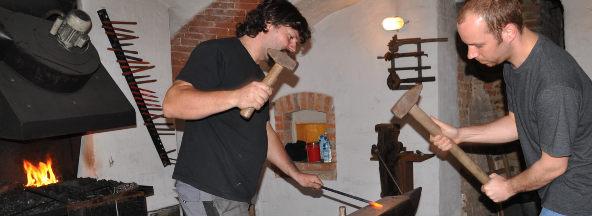

---
layout: shell
title: Johannes Pilz lässt altes Handwerk aufleben
---				
		<!-- Main Wrapper -->
			<div id="main-wrapper">

				<!-- Wide Content -->
					<section id="content" class="container">
						<header>
							<h2>Johannes Pilz lässt altes Handwerk aufleben</h2>
						</header>
						<a href="#" class="image image-full"></a>
                        
						<h3>Kunsthandwerk und Modernes verschmelzen miteinander.</h3>
                        <p><i>Reith.</i> Auf der Suche nach dem Klischee "Schmied", dürfte sich jeder beim Anblick von Johannes Pilz bestätigt fühlen: "G'standen", wie jemand mit solch stattlicher Erscheinung landläufig gerne beschrieben wird, kommt er den Vorstellungen ziemlich nahe. Aber, beim Schmied von heute verschmelzen altes Kunsthandwerk und Moderne, denn das tatsächliche Bearbeiten des Eisens, mit bis zu 2.000 Grad heißem Feuer zum Glühen gebracht, nimmt heute längst einen eher untergeordneten Teil des Tagesgeschäftes ein. Obgleich es gerade dieser Prozess des Hämmerns und Formens ist, der den Kunstschmied schon von Kindesbeinen an faszinierte.</p>

                        <p>Seit 1. März ist der Meister seines Handwerks nun sein eigener Herr und somit Beweis genug, dass das von vielen schon tot gesagte, alte Handwerk lebt und in jüngster Vergangenheit sogar wieder an Bedeutung gewinnt. Die Schmiede im alten Gewölbe des elterlichen Anwesens und die weiteren Gebäude sind für Johannes Pilz zentraler Mittelpunkt des Alltags. Dabei schlug er mit seinem handwerklichen Berufswunsch eher aus der Art der Familie, in der in der Regel die Ingenieur-Laufbahn gewählt wird. Die dreieinhalbjährige Ausbildung zum Metallbauer, Fachrichtung Metallgestaltung, absolvierte der Abiturient in einer renommierten Kunstschmiede in München, in der alles abgearbeitet wurde, was im weitesten Sinn unter diesen Bereich fällt. Das Resultat ist ein umfangreiches Wissen in Schließtechnik, Bauschlosserarbeiten und vor allem im Bereich Erstellung und Restaurierung von Schmiedearbeiten. Johannes Pilz war anschließend in verschiedenen Betrieben tätig. Viele Stunden verbrachte er in Münchner Kirchen, mit das bekannteste Bauwerk, dem in "seiner" Werkstatt zu neuem Glanz verholfen wurde, war die ehrwürdige Mariensäule am Marienplatz.</p>

                        <p>Dass er schon in jungen Jahren wirklich etwas von diesem alten Handwerk verstand, bekam er 2001 schwarz auf weiß dokumentiert, als er mit seinem Gesellenstück, einem Wetterhahn, im Leistungswettbewerb als Bundessieger hervorging. Dies brachte ihm zusätzlich die Verdienstmedaille des Bayerischen Handwerks und persönlich die Bestätigung ein, bei seiner Berufswahl die richtige Entscheidung getroffen zu haben. Nächster Schritt war 2003 die Meisterschule in Regensburg. Nach der Meisterprüfung zog er ganz nach Reith zurück und war bei mehreren Betrieben im Landkreis als Werkstattmeister in führenden Positionen. Immer mehr kristallisierte sich heraus, dass die Nachfrage nach geschmiedeten Bauteilen größer ist, als mancher vermuten möchte. Im weiteren Umkreis dürfte er der Einzige sein, der den Umgang mit Hammer und Eisen noch beherrscht. Er ist Ansprechpartner für viele Privatleute, die von der kleinen Eisenstange als Ersatzteil bis hin zum künstlerisch wertvollen Gitter seine Dienste in Anspruch nehmen. Abgedeckt wird alles, was in seinen Bereich fällt. Selbstverständlich werden auch sämtliche Metallbau- und Schlosserarbeiten in Eisen, Bauschlosserarbeiten und Schließtechniken angeboten. Letztlich sind es ganz unterschiedliche Auftraggeber, die sich in der Werkstätte in Reith ihre Wünsche verwirklichen lassen. Unter anderem produziert Johannes Pilz derzeit für eine Nobel-Boutique im Münchner Zentrum hochglanzpolierte Edelstahlteile. Auf der Reisbacher Messe "Wohnen und Am biente" wird unter anderem eine schmiedeeiserne Bank zu sehen sein. Das handgearbeitete Einzelstück geht anschließend nach Baden-Württemberg und wird als Friedhofsbank seine Zwecke erfüllen. Wer Johannes Pilz einen Auftrag gibt, kann sicher sein, echte, qualitätvolle Handarbeit zu erhalten.</p>

                        <p>Die Rückläufigkeit des klassischen Kunstschmiedehandwerks führt der Fachmann auf die technischen Veränderungen der letzten 50 Jahre zurück. Handarbeit sei zeitaufwendig, weshalb das freie Arbeiten durch Maschinen ersetzt wurde. Der Kreis derer, die dieses Können zu schätzen wissen, wachse aber wieder und nachdem sich der Kunstschmied durchaus vorstellen kann, dass auch Laien einmal ihr Talent in diesem traditionsreichen Handwerk ausloten wollen, wird er vielleicht in naher Zukunft den ein oder anderen Lehrgang für Hobbyschmiede anbieten.</p>

                        <p><i>Monika Bergbauer</i></p>
					</section>
				<!-- /Wide Content -->
			</div>
